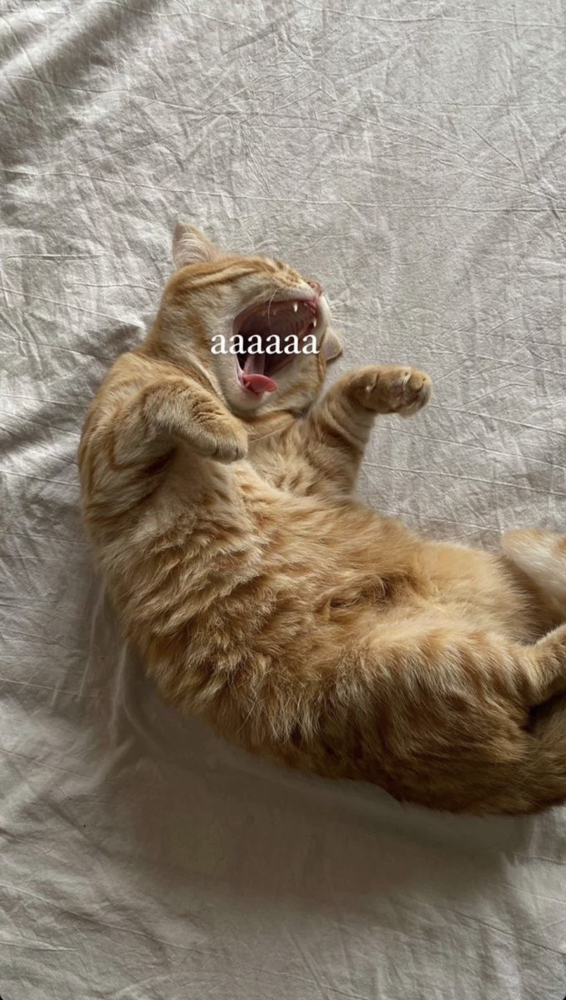

Interesting Cat Facts
Cats are amazingly cute creatures with lots of unique behaviors.
Here are some facts you might not know:
- Persian Cats have long, luxurious fur that requires regular grooming.
- Maine Coon Cats are one of the largest domesticated cat breeds.
- Siamese Cats are known for their striking blue almond-shaped eyes.
Cat Care Tips
Not all cats are the same, and their care can vary greatly depending on their breed and personality. But here are some general tips for taking care of your feline friend:
- Provide a balanced diet suitable for your cat's age and health.
- Ensure they have access to fresh water at all times.
- Regularly groom your cat to keep their coat clean and free of mats.
